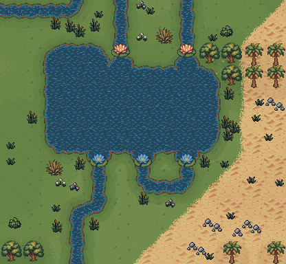
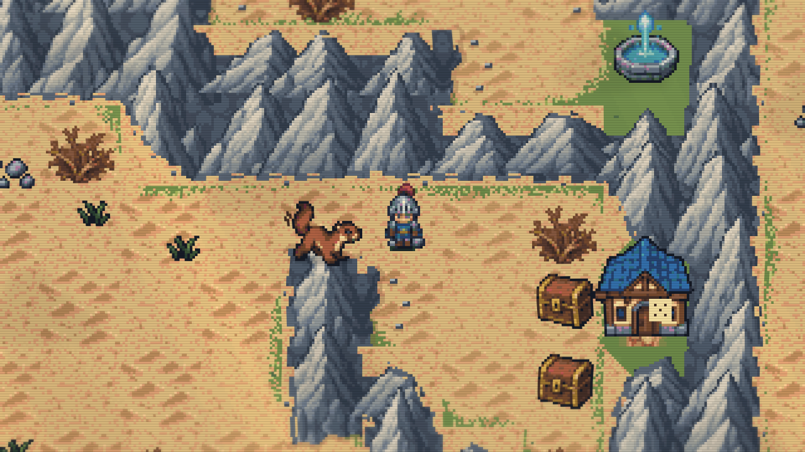
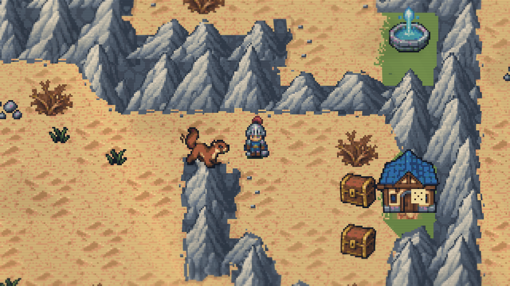
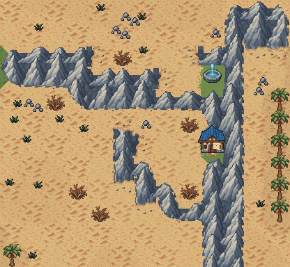
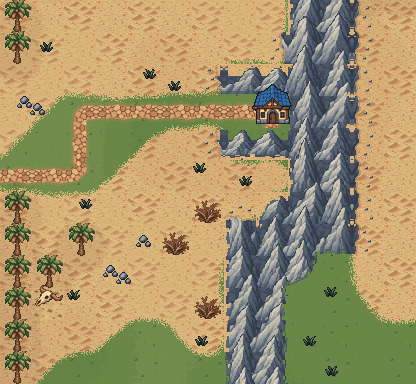
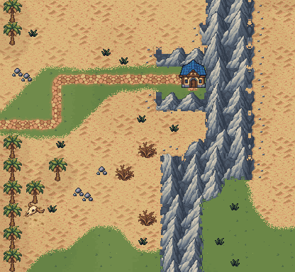

E1 — genuine grass and sand boundary preserved


Sand now reaches rock faces without exposing grass underneath. Actual meadow borders, the casino lawn and fountain greenery retain their authored ground.
337 overworld checks passed. All 28 personal save/profile files unchanged. Local Release and launcher rebuilt; no repackaging. Verification record.





